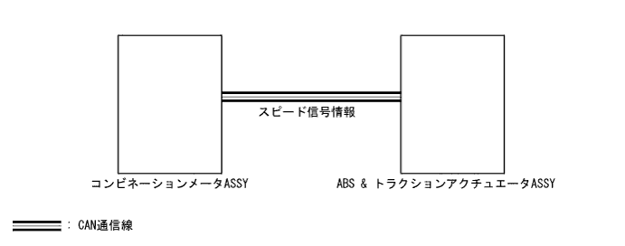

Meter & Gauge System Speedometer Malfunction |
). Also, check the internal factor of indicated value tolerance using a speedometer tester (see).
)| Step 1 | Perform TaSCAN Active Test (Combination Meter) |
Using SST (TaSCAN), follow the prompts on the screen to display the "Active Test" screen and perform the inspection.
| Item Name | Item Description | Inspection Item |
|---|---|---|
| Speedometer | Vehicle Speed Indication Switching | 160、120、80、40、0(km/h) |
| Result | Proceed to |
|---|---|
| Each vehicle speed in the Active Test is displayed smoothly | A |
| Each vehicle speed in the Active Test is not displayed smoothly | B |
|
| ||||
| A | |
| Step 2 | Read TaSCAN Data (Combination Meter) |
Using SST (TaSCAN), follow the prompts on the screen to display the "ECU Data Monitor" screen and check the computer data.
| Item Name (Symbol) | Item Description/Display Range | Standard Value | Remarks |
|---|---|---|---|
| Vehicle speed (SPD) | Vehicle speed input value Display range: 0 to 255 [km/h] | 0 to 255 [km/h] Almost synchronized with actual vehicle speed | - |
| Result | Proceed to |
|---|---|
| Data monitor value almost matches actual vehicle speed | A |
| Data monitor value differs from actual vehicle speed | B |
|
| ||||
| A | |
| Step 3 | Read DTCs (ABS & Traction Actuator Assembly) |
Using SST (TaSCAN), check whether DTCs of the ABS & traction actuator are output.
| Result | Proceed to |
|---|---|
| No DTC output | A |
| DTC output | B |
|
| ||||
| A | |
| Step 4 | Read TaSCAN Data (ABS & Traction Actuator Assembly) |
Using SST (TaSCAN), follow the prompts on the screen to display the "ECU Data Monitor" screen and check the computer data.
| Item Name (Symbol) | Item Description / Display Range | Standard Value | Remarks |
|---|---|---|---|
| Vehicle speed (SPD1) | Indicates meter vehicle speed 0-255km/h | 0km/h: When stopped No large fluctuation: When driving at a constant speed | - |
| Result | Proceed to |
|---|---|
| Value on screen is almost synchronized with speedometer | OK |
| Value on screen differs from speedometer | NG |
|
| ||||
| OK | |
| Step 5 | Replace Combination Meter Assembly |
Replace the combination meter assembly with a new or known good one (see) and check the operation of the speedometer.
| Result | Proceed to |
|---|---|
| Operates normally | OK |
| Does not operate normally | NG |
|
| ||||
| OK | ||
| ||